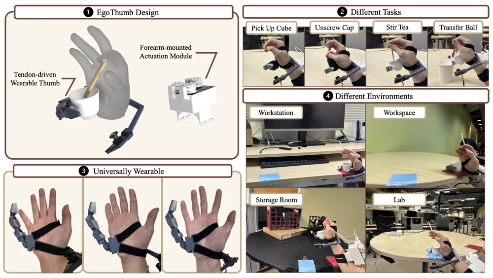

Jianyu Hou
I’m a computer science undergraduate at UC San Diego, interested in research, startups, and software engineering. I’m advised by Prof. Hao Su on robotics research and previously interned at Google.
Publications
* / † Equal contribution
Experience
—
Software Engineer Intern
Kirkland, WA
Modernized a Root of Trust provisioning service, simplifying its architecture and migrating it off a deprecated microservice platform. Developed end-to-end integration tests and planned a zero-downtime production traffic migration.
- C++
- Root of Trust
- Service Migration
— Present
Hao Su Lab
Undergraduate Researcher
UC San Diego · San Diego, CA
Developed vision-based robot learning pipelines for wearable dexterous manipulation, real-world data collection systems, and sim-to-real demonstration generation.
- Diffusion Policy
- MuJoCo / Isaac Gym
- Robot learning
—
AgenticEDU
Founder
San Diego, CA
Led development of an AI-powered iPad note-taking app for academic problem solving and personalized study materials. Presented the product to ZhenFund’s Investment Committee.
- LangGraph
- Agentic AI
- Full-Stack Development
—
BioPACIFIC MIP
App Developer
UC Santa Barbara · Santa Barbara, CA
Migrated a scientific research web application to a Swift-based iOS app, preparing it for App Store deployment. Designed backend APIs to support data integration and mobile functionality.
- Swift
- iOS Development
- Backend APIs